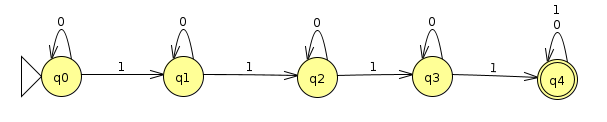

Homework 2: DFAs
Chris Tralie
Overview / Logistics
The purpose of this problem set is to give you practice with DFAs
Part 1: Constructing DFAs 🚧 🏗️ 👷🏽♀️
For all of the problems below, you should save your JFLAP file as "DFAx.jff", where x is the problem number, and then upload them to canvas.
Problem 1.1 (3 Points)
Construct a DFA in JFLAP that accepts the language over Σ = {0, 1} of strings with an odd number of 1's or an even number of 0's. Running your DFA on the following test file should give these results (you should come up with your own tests as well to convince yourself it's working)
| Input | Result |
| 10001000000 | Reject |
| 10001111001 | Reject |
| 10001111101 | Accept |
| 10010100100 | Reject |
| 10101001111 | Accept |
| 11001010110 | Reject |
| 11010010111 | Accept |
| 11100000010 | Reject |
| 11111110111 | Reject |
| 110000000100 | Accept |
Hint: You may want to use more than one accept state in your DFA.
Problem 1.2 (3 Points)
Construct a DFA in JFLAP that accepts the language over Σ = {a, b} of strings with a nonzero and even number of a's, followed by at least one b, followed by zero or an odd number of a's. Running your DFA on the following test file should give these results (you should come up with your own tests as well to convince yourself it's working)
| Input | Output |
| aaaaaa | Reject |
| aaaab | Accept |
| aaaabbbbbb | Accept |
| aaaabbbbbba | Accept |
| aaaabbbbbbaa | Reject |
| aaaabbbbbbaaa | Accept |
| abbb | Reject |
| bbb | Reject |
Problem 1.3 (3 Points)
Construct a DFA in JFLAP that accepts the language over Σ = {0, 1} of all binary digits of natural numbers that are evenly divisible by 5, when read from left to right. Running your DFA on the following test file should give these results (you should come up with your own tests as well to convince yourself it's working)
| Decimal Number | Input | Result |
| 72 | 1001000 | Reject |
| 12 | 1100 | Reject |
| 5 | 101 | Accept |
| 0 | 0 | Accept |
| 28 | 11100 | Reject |
| 27 | 11011 | Reject |
| 71 | 1000111 | Reject |
| 75 | 1001011 | Accept |
| 85 | 1010101 | Accept |
| 47 | 101111 | Reject |
Problem 1.4 (3 Points)
You should review how binary addition works before you start this problemIn this problem, you will create a DFA that recognizes the language of binary strings that have been correctly added together. Since we can only feed a single symbol to a DFA at a time, we will have to setup a slightly more intricate language that we have so far with 8 elements
\[ \Sigma = \left\{ \left[\begin{array}{c}0\\0\\0\end{array}\right],\left[\begin{array}{c}0\\0\\1\end{array}\right],\left[\begin{array}{c}0\\1\\0\end{array}\right],\left[\begin{array}{c}0\\1\\1\end{array}\right],\left[\begin{array}{c}1\\0\\0\end{array}\right],\left[\begin{array}{c}1\\0\\1\end{array}\right],\left[\begin{array}{c}1\\1\\0\end{array}\right],\left[\begin{array}{c}1\\1\\1\end{array}\right] \right\} \]
Each element of the language is a column with three numbers: the top one is a digit in the first binary number, the middle one is the corresponding digit in the second binary number, and the third is the corresponding digit in the result that we're checking. You should design your DFA to read the binary digits from right to left (this is easier than left to right actually, and it matches the way the binary addition app works). For instance, to check the result 10111012 + 1011002 = 100010012
you would input the sequence
\[ \left[\begin{array}{c}1\\0\\1\end{array}\right]\left[\begin{array}{c}0\\0\\0\end{array}\right]\left[\begin{array}{c}1\\1\\0\end{array}\right]\left[\begin{array}{c}1\\1\\1\end{array}\right]\left[\begin{array}{c}1\\0\\0\end{array}\right]\left[\begin{array}{c}0\\1\\0\end{array}\right]\left[\begin{array}{c}1\\0\\0\end{array}\right]\left[\begin{array}{c}0\\0\\1\end{array}\right] \]
And your machine should accept. Not every binary addition result will be correct, though. So if you see, for example, a sequence like this
\[ \left[\begin{array}{c}0\\1\\1\end{array}\right]\left[\begin{array}{c}1\\0\\0\end{array}\right] \]
The machine should reject, because that would be like saying 102 + 012 = 102, which is false; the result should be 112.
Create a DFA in JFLAP to recognize the language of correctly added binary numbers. You can unroll the inputs in "column major order" so that your language consists of symbols of 3 binary digits back to back. So, for instance, the input
\[ \left[\begin{array}{c}1\\0\\1\end{array}\right]\left[\begin{array}{c}0\\0\\0\end{array}\right]\left[\begin{array}{c}1\\1\\0\end{array}\right] \]
would be inputted to JFLAP as 101000110.
This one is particularly tedious to create test cases for, so click here to download some tests for JFLAP. You should get the following results:
| Input | Result |
| 011011011000011011110001 | Accept |
| 111100101111010010111001 | Reject |
| 101000110111100111100001 | Accept |
| 000110111010100010010001 | Accept |
| 110001000101011101101000 | Accept |
| 101110100010100111100001 | Accept |
| 111000111001110110100000 | Reject |
| 100110001101111001111001 | Reject |
| 100000001110001001111001 | Reject |
| 100001011100011011011001 | Reject |
Part 2: Formal DFA Descriptions 👔 👠 🎩
The only problem you need to submit a JFLAP file for is 2.1. The other two are pen and paper (or better yet, LaTeX)
Problem 2.1 (3 Points)
Convert the following formal description into a DFA in JFLAP, and submit your JFLAP file
-
Q = { q0, q1, q2, q3, q4 }
-
Σ = {0, 1}
-
δ =
0 1 q0 q0 q1 q1 q2 q1 q2 q0 q3 q3 q4 q1 q4 q4 q4 - q = q0
- F = {q0, q1, q2, q3}
What language does this DFA recognize?
Hint: You may want to consider the DFA that accepts the opposite of what this one does (i.e. everything is the same except F = {q4}). Then you can build a set which is the complement of whatever set is accepted by the opposite DFA
Problem 2.2 (3 Points)
Provide a formal description of the following DFA (Click here to download the corresponding JFLAP file)
That is, define all of the symbols in the 5-tuple (Q, Σ, δ, q, F), as we talked about in class and as is discussed in Sipser 1.1. What language does this DFA recognize?
Problem 2.3 (3 Points)
Given a fixed N > 0, prove by construction that the language of binary strings corresponding to numbers divisible by N is regular. In other words, provide a general specification for (Q, Σ, δ, q, F) for a particular N. Note that problem 1.3 was a specific example of such a regular language with N = 5.